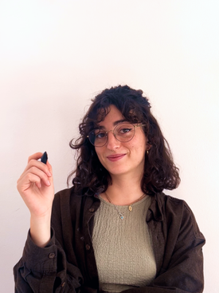

I'm a multidisciplinary designer who cares most about shipping functional MVPs — designing hand-in-hand with developers, always close to the real constraints of what can actually be built.
I started my career at a five-person agency working exclusively with startups, which is where that focus comes from. My path there began in marketing, before my love for creativity pulled me into design and development.
Since then, I've worked at larger companies on more complex projects, which has given me perspective — moving between small, scrappy teams and bigger, more structured ones.

Barcelona, Spain · Open to Remote
Download CV (PDF)Product experience: Led the design and optimization of key user journeys across the product, from identifying UX opportunities to delivering and validating solutions.
Experimentation: Used A/B testing and user behaviour data to evaluate design decisions and iterate on conversion-focused experiences.
Design consistency: Contributed to the evolution of the product's UI and Design System, establishing patterns and documentation to improve consistency across platforms.
Product delivery: Worked closely with Engineering and Marketing to translate business and product requirements into feasible, high-fidelity experiences and ensure quality through implementation.
Client projects: Enagas, Repsol, Club de la Excelencia, Montreal Children's Hospital.
Designed digital products focused on B2B SaaS and internal management platforms, working on complex workflows and information-heavy interfaces.
Developed digital product and business strategies for startup clients. Designed Design Systems and digital interfaces. Contributed to front-end development and product testing, bridging UX and development.
Reinforced and guided students, organized group dynamics and managed teams (design critics), and provided content to the teacher.
Data panel extraction and analysis within the FMCG market; customized research studies, reports and client presentations.
Interrupted by job opportunity as Teacher Assistant UX/UI in Ironhack.
"Investigación aplicada al ámbito de la empresa."
Erasmus in Haagse Hogeschool, The Hague, Netherlands (2018).
Working across different organizations meant adapting to very different ways of building product — here's what I took from each, and what I actually brought to the table.
The most innovative methodology I've worked with. Shape Up bets on a problem for a set cycle, giving the team real autonomy to shape the solution together instead of a fixed scope and sprint calendar. I used it to ship MVPs fast and keep the whole team invested.
Learn more about Shape Up ↗The methodology I've used the most, in startups and bigger teams alike. Short sprints and close collaboration with developers let me adapt the design as requirements changed, instead of working from a spec that was already outdated by the time it shipped.
I started out in small agencies working with startups, then moved into larger, more traditional companies to see the other side — bringing UX/UI value to teams where it wasn't established yet, despite slower decisions and more hierarchy. I've also worked the opposite extreme: companies with no design process at all. In both cases, the real contribution wasn't knowing a methodology by name, but reading the team and adapting how I worked to whatever stage the company was actually in.